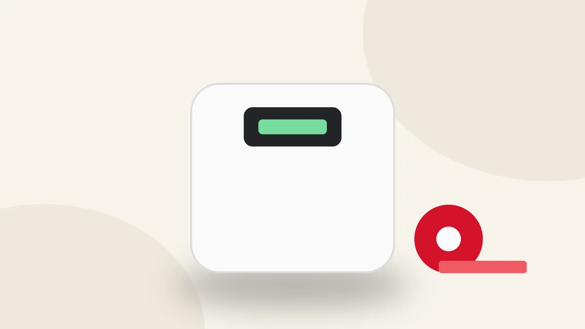
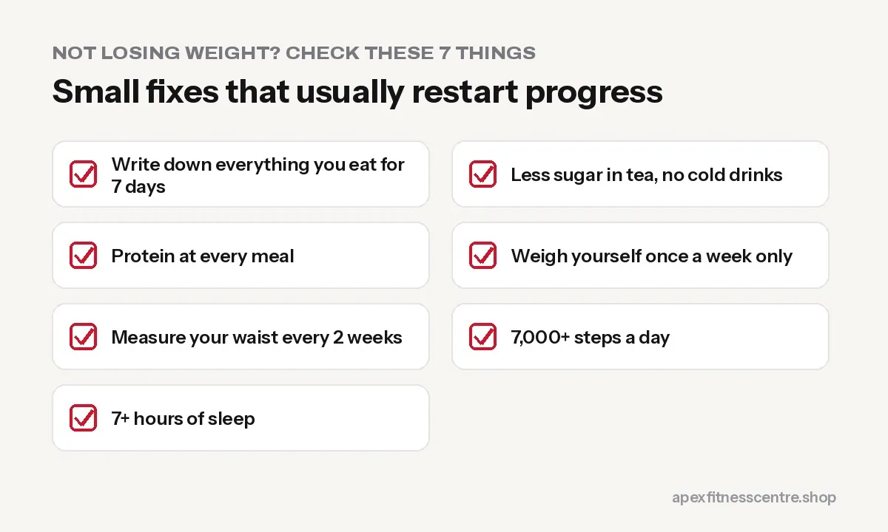

Why Am I Not Losing Weight? 10 Common Reasons (and Fixes)
Eating less but the scale won't move? 10 common reasons weight loss stalls, from sugary tea to water weight, and how to fix each.

If you are eating “healthy,” going to the gym and still not losing weight, something in the equation is off. In almost every case it is one of these 10 reasons. The good news is that each one has a simple fix.
1. You are eating more than you think
This is the most common reason by far. Portions grow quietly: an extra half plate of rice, a second helping of tarkari cooked in plenty of oil, snacks while cooking.
Fix: For one week, write down everything you eat and drink. You do not need to count calories forever, just long enough to see where the extra food comes from.
2. Your drinks have calories
Three cups of milk tea with two spoons of sugar each, a cold drink and a packet juice can add several hundred calories a day without filling you up.
Fix: Less sugar in tea, black or green tea, and water instead of cold drinks.
3. Weekends cancel your weekdays
Five careful days, then a big Saturday feast, momo and drinks with friends, and a lazy Sunday. Many people eat enough at weekends to undo the week.
Fix: Keep weekends enjoyable but planned. One treat meal, not two days.
4. You are losing fat but gaining water or muscle
If you just started weight training, your muscles store more water and glycogen. The scale can stay the same for 1 to 3 weeks even while you lose fat.
Fix: Measure your waist and take photos, not just your weight. See how to lose belly fat for how to measure.
5. You weigh yourself every day and panic
Body weight goes up and down by 0.5 to 1.5 kg from day to day because of salt, water, food in your stomach and, for women, your menstrual cycle.
Fix: Weigh once a week, same day, same time, after the toilet and before food. Compare the trend over 3 to 4 weeks.
6. You are not eating enough protein
Low protein makes you hungrier and can cause you to lose muscle instead of fat.
Fix: A protein food at every meal: eggs, dal, curd, paneer, chicken, fish, soybean.
7. You overestimate exercise
A 45-minute gym session might burn a few hundred calories, which one plate of chowmein can replace. Fitness apps and machines often overestimate.
Fix: Use exercise to support weight loss, but control the plate first.
8. You sit most of the day
Daily movement outside the gym, such as walking, stairs, and chores, often makes a bigger difference than the workout itself.
Fix: Aim for 7,000 to 10,000 steps a day. Walk after meals, take stairs, walk while on the phone.
9. Poor sleep and stress
Short sleep increases hunger and cravings, especially for sweet and fatty food. Stress does the same.
Fix: 7 to 9 hours of sleep, a fixed bedtime, and phones away 30 minutes before sleep.
10. A medical or medicine-related cause
Some conditions, such as an underactive thyroid or PCOS, and some medicines can make weight loss harder.
Fix: If you have done everything above for 2 to 3 months without progress, or you have other symptoms like unusual tiredness, hair loss or irregular periods, see a doctor.

A quick checklist
- [ ] Wrote down my food for 7 days
- [ ] Less sugar in tea and no cold drinks
- [ ] Protein at every meal
- [ ] Weighing once a week only
- [ ] Measuring waist every 2 weeks
- [ ] 7,000+ steps a day
- [ ] 7+ hours of sleep
For a full plan, see our weight loss diet plan with Nepali food.
Frequently asked questions
Why am I gaining weight after starting the gym?
Usually water stored in newly trained muscles, especially in the first weeks. Watch your waist measurement; if it goes down, you are losing fat.
How long does it take to see weight loss?
With a steady calorie deficit, most people see the scale trend down within 2 to 4 weeks.
Should I eat less if I’m not losing weight?
First check the basics above. If you are truly consistent for 3 weeks with no change, reduce your portions slightly, for example a little less rice, rather than cutting drastically.
Sources
- WHO fact sheet: obesity and overweight (World Health Organization)
- A new predictive equation for resting energy expenditure in healthy individuals (Mifflin et al., American Journal of Clinical Nutrition, 1990)
- Effects of aerobic and/or resistance training on body mass and fat mass in overweight or obese adults (Willis et al., Journal of Applied Physiology, 2012)
General information, not medical advice.
General information, not medical advice. Ask a doctor if you have a health condition. Results vary from person to person.